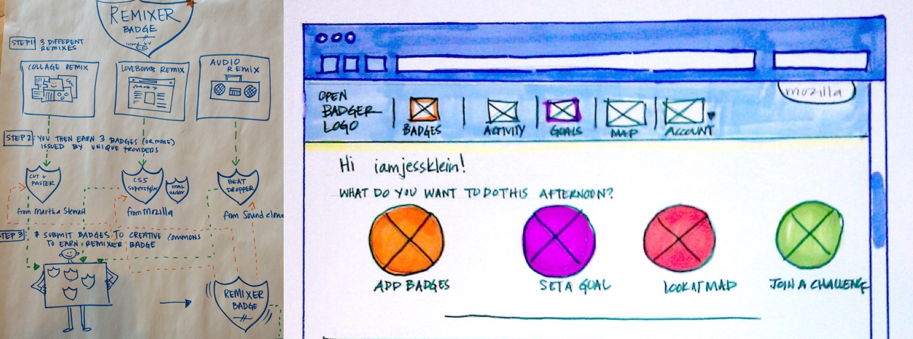

Good design should support experimentation
Open Badges
Try it
Read the blogpost
“I was compelled by the idea of students owning their learning data (rather than just schools and employers). Owning this data can be empowering and gives individuals the chance to embrace and recognize the skill development that they are doing in non-traditional environments.
”
Challenge
How might we recognize learning that is happening everywhere?
Engagement strategy
Work with community based organizations to develop a network of organizations (who may be a part of the same communities of interest) to take shared risks around technology.
Design strategy
Work with global open communities to create a suite of tools to recognize learning and skill development.
Solution
As the founding Creative Director, developed an ecosystem of tools for learners and those who support learning to earn, assess, issue and display digital micro-credentials, as well as resources for employers who might want access to job applicant credentials.
“Open Badges communicate skills and achievements by providing visual symbols of accomplishments packed with verifiable data and evidence that can be shared across the web. Open Badges empower individuals to take their learning with them, wherever they go, building a rich picture of their lifelong learning journey. Thousands of organizations across the world already issue Open Badges, from non-profits to major employers to educational institutions at all levels.” - from Open Badges website
Process
I worked closely with different kinds of organizations that we were exploring offering non traditional credentials. After researching, doing interviews and, a ton of listening, we piloted the Chicago Summer of Learning project in conjunction with Mayor Rahm Emanuel and the MacArthur Foundation to test out some ideas for out - of - school youth educational programming. This work provided the foundation for much of the technical and social thinking around badges that continues around the world to this day.

Concept sketches for a remixer badge and a badge dashboard.